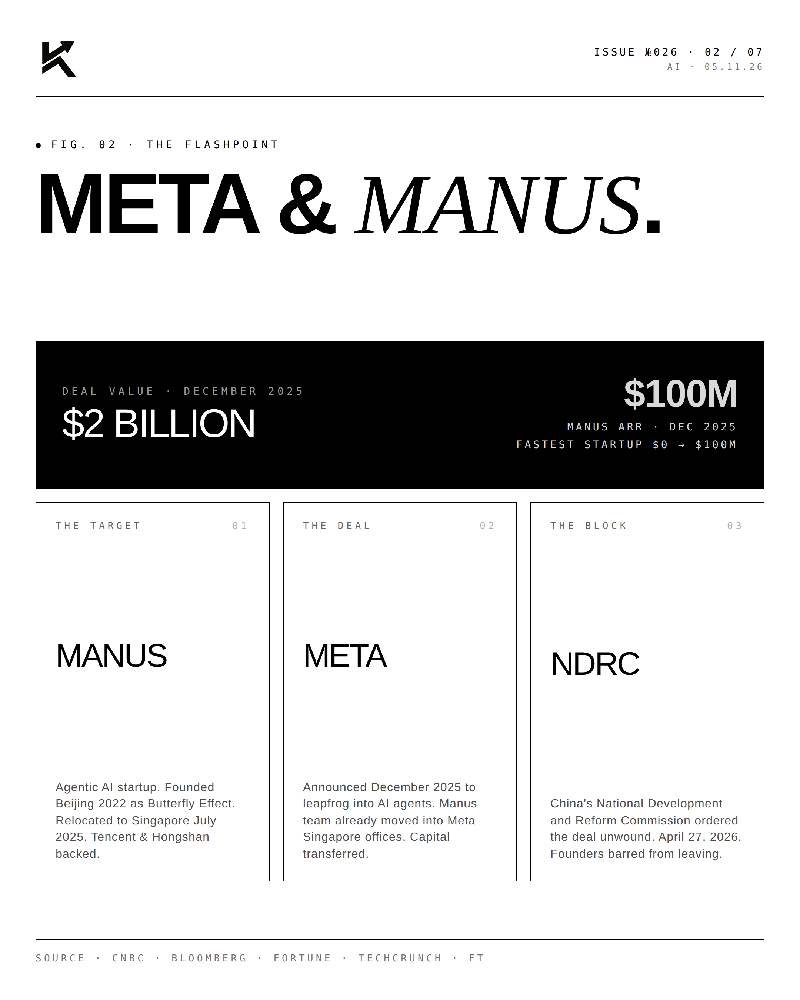
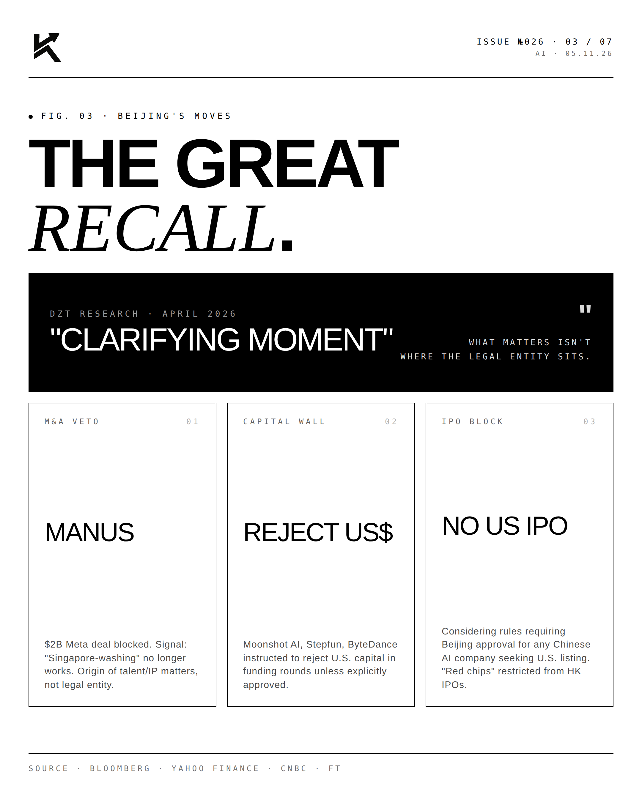
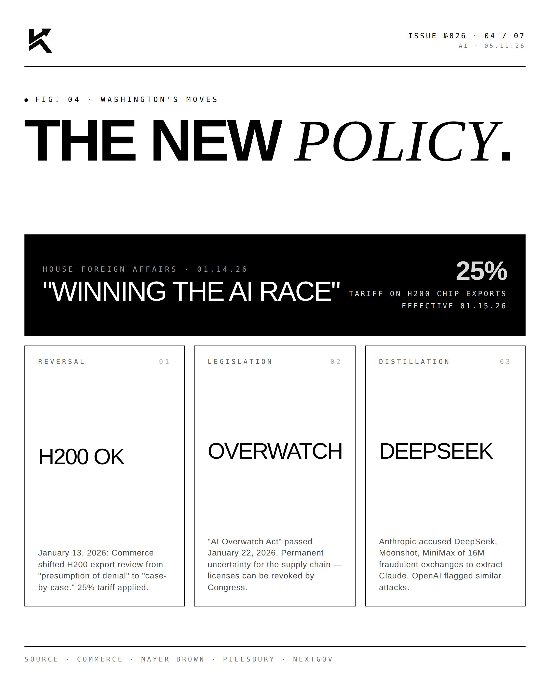
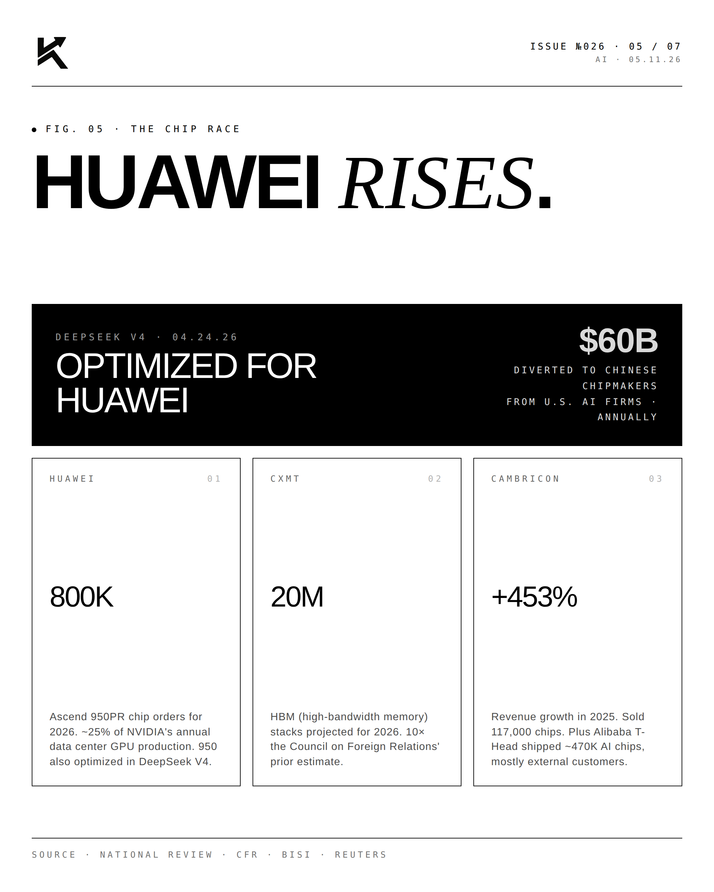
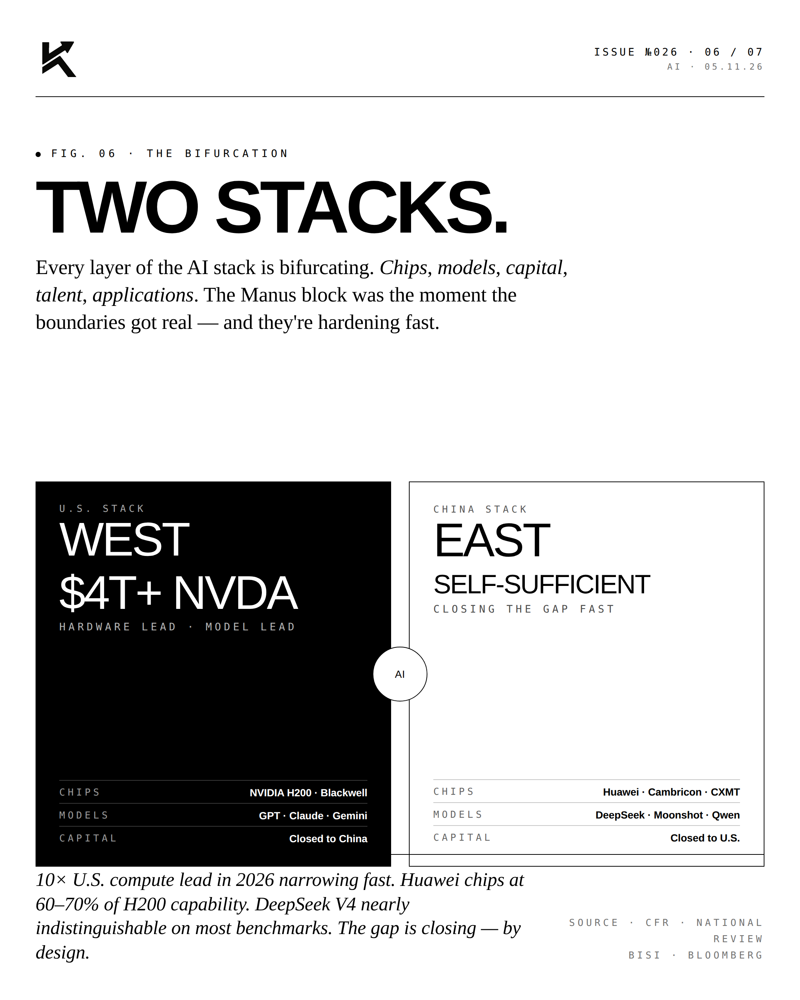
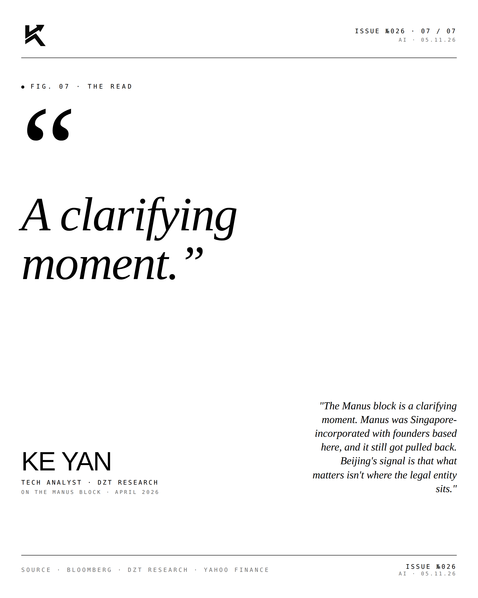

The AI War.
On April 27, Beijing blocked Meta's $2B acquisition of Manus. The signal: U.S. and Chinese AI ecosystems are decoupling. Two parallel stacks are emerging. The cold war is hot.

Meta & Manus.
In December 2025, Meta announced a $2 billion acquisition of Manus — an agentic AI startup founded in Beijing as Butterfly Effect in 2022, relocated to Singapore in July 2025, and backed by Tencent and Hongshan. By the time Beijing's NDRC issued its block order on April 27, 2026, Manus employees had already moved into Meta's Singapore offices. Capital had been transferred. The co-founders are now barred from leaving China.

The Great Recall.
Beijing's moves are coordinated and accelerating:

- Manus deal blocked — Signal: "Singapore-washing" no longer works.
- Capital wall — Moonshot AI, Stepfun, ByteDance instructed to reject U.S. capital unless explicitly approved.
- IPO block — Considering rules requiring Beijing approval for any Chinese AI company seeking U.S. listing. "Red chips" restricted from Hong Kong IPOs.

The New Policy.
Washington's response has been less coordinated but no less consequential:

- January 13, 2026: Commerce shifted H200 export review from "presumption of denial" to "case-by-case" with 25% tariff applied.
- January 22, 2026: "AI Overwatch Act" passed — permanent licensing uncertainty.
- February 2026: Anthropic accused DeepSeek, Moonshot, MiniMax of 16M fraudulent exchanges to extract Claude.
- House Foreign Affairs Committee hearing: "Winning the AI Race Against the Chinese Communist Party."

Huawei Rises.
The chip race numbers tell the structural story:

- Huawei Ascend 950PR — 800K chip orders for 2026 (~25% of NVIDIA's annual GPU production)
- CXMT — 20M HBM stacks in 2026 (10× CFR's prior estimate)
- Cambricon — +453% revenue growth in 2025; sold 117K chips
- Alibaba T-Head — ~470K AI chips shipped, mostly external customers
- DeepSeek V4 (April 24, 2026) — optimized for Huawei chips, not NVIDIA
- ~$60B diverted annually from U.S. AI firms to Chinese chipmakers
Two Stacks.
Every layer of the AI stack is now bifurcating — chips, models, capital, talent, applications.
WEST: NVIDIA H200/Blackwell chips, GPT/Claude/Gemini models, capital closed to China.
EAST: Huawei/Cambricon/CXMT chips, DeepSeek/Moonshot/Qwen models, capital closed to the U.S.
The compute gap is narrowing fast. Huawei chips at 60-70% of H200 capability. DeepSeek V4 nearly indistinguishable on most benchmarks. The 10× U.S. compute lead in 2026 is closing — by design.
"A clarifying
moment."KE YANTech Analyst · DZT Research · On the Manus block · April 2026
"The Manus block is a clarifying moment. Manus was Singapore-incorporated with founders based here, and it still got pulled back. Beijing's signal is that what matters isn't where the legal entity sits."
The cold war is hot. The decoupling is real. The bifurcation year is 2026.
Disclosure
The author is a Limited Partner in 1789 Capital, which holds a position in xAI. Personal commentary and editorial analysis. Not investment advice, not an offer or solicitation.